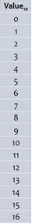
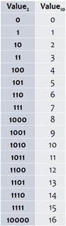
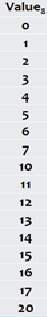
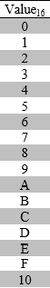

In the world of computers and digital systems, data is dealt with according to a special representation and method. Here we have to remember something, that you can fully understand, data about the fundamental factors, data that are in the form of strings of zeros and ones. Another, it can send information and data into its own language, the information and data can be converted into its own language, and it can be used in processing operations and other types of commands that we may ask of it.
In this context, dealing with computers and digital systems requires knowledge of certain number systems, which are slightly different from the number systems that we deal with in daily life, but are related to them, as it is possible to convert from these systems to the system that we understand in our daily life, and vice versa as well. The operations that take place within computer circuits and digital systems depend on Boolean algebra, so the numbers that will be dealt with must also be subject to the conditions of Boolean algebra, and any type of information that is entered into the computer must be converted to formulas that Boolean algebra understands, so that computer circuits can Dealing with it, processing it, and then re-transforming it into the pattern that we as humans understand.
The decimal number system is the simplest number system in terms of ease of understanding for us as humans. The system of numbers that he said in everyday life, to which algebraic operations can be applied in the traditional form: addition, subtraction, multiplication and division.
Uses 10 numbers : 0, 1, 2, 3, 4, 5, 6, 7, 8, 9 |
 |
| Power of 10 representation | 104 | 103 | 102 | 101 | 100 |
| Decimal representation | 10000 | 1000 | 100 | 10 | 1 |
| Base 10 representation | 20,000 | 3,000 | 600 | 20 | 5 |
It is the basis of the digital revolution, and the basis of information coding systems and all computer processing operations. It is encoded in the binary number system using a series of zeros and ones, so any information is basically converted into the binary number system, and then processed within the computer.
(1000)10= (11 1110 1000)2 (1,000,000)10=(1111 0100 0010 0100 0000)2 |
 |
Uses 2 numbers:0, 1
| Power of 10 representation | 27 | 26 | 25 | 24 | 23 | 22 | 21 | 20 |
| Decimal representation | 128 | 64 | 32 | 16 | 8 | 4 | 2 | 1 |
| Base 2 representation | 1 | 0 | 0 | 1 | 0 | 0 | 0 | 1 |
|
 |
(1000)10= (3E8)16
(1,000,000)10= (F4240)16 |
 |